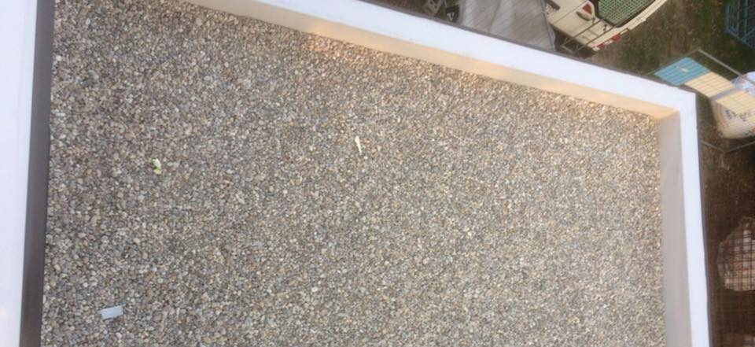
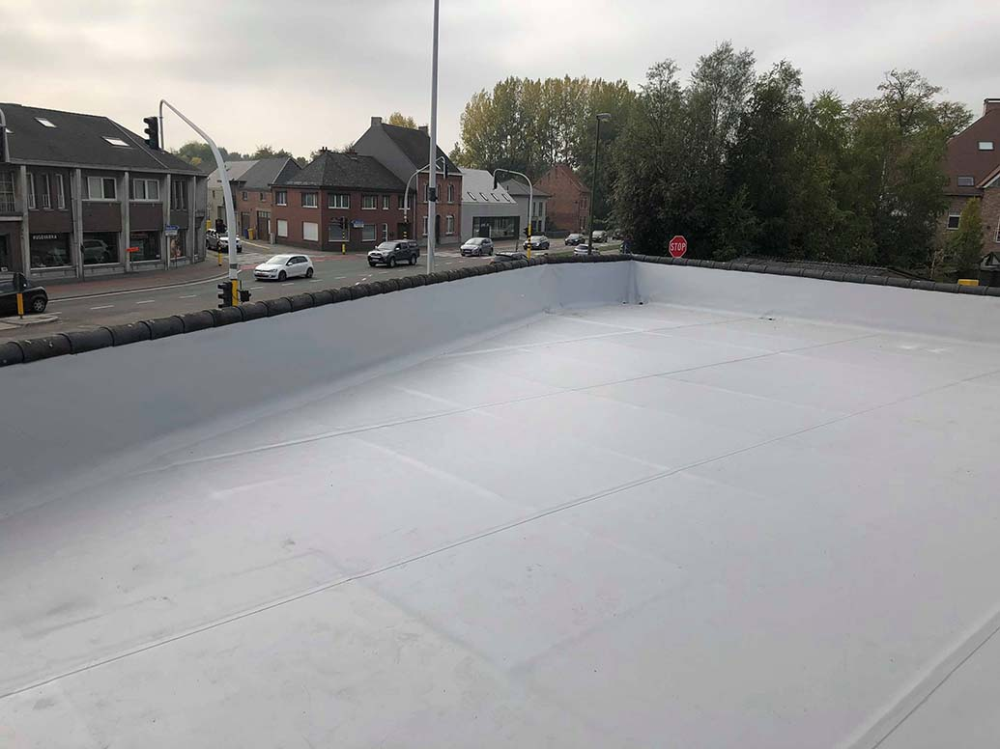
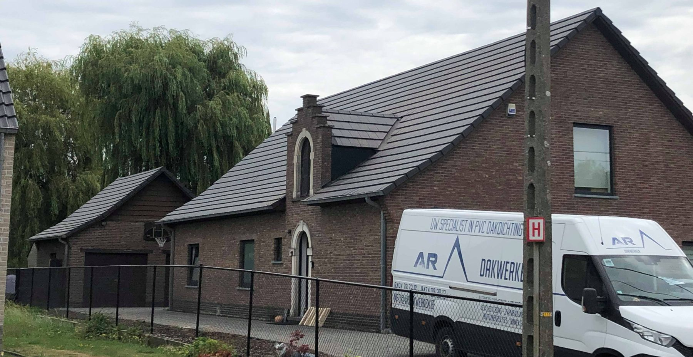
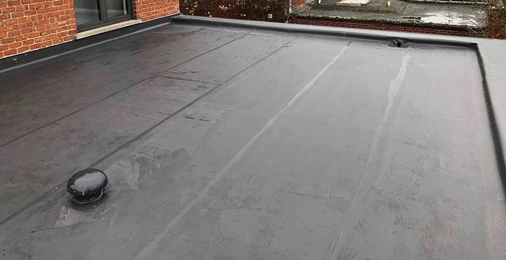
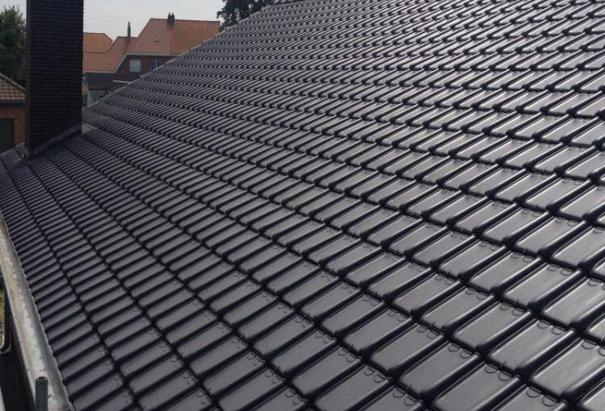
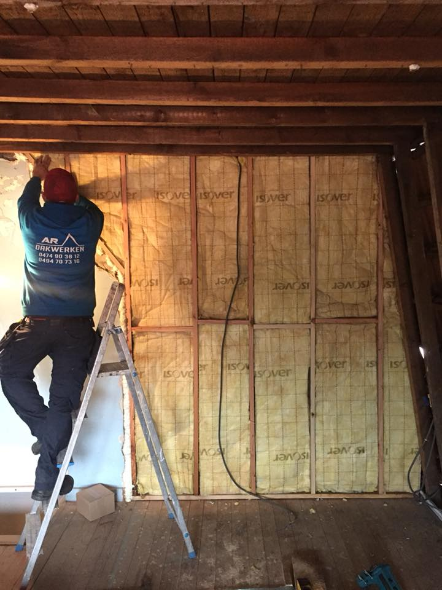
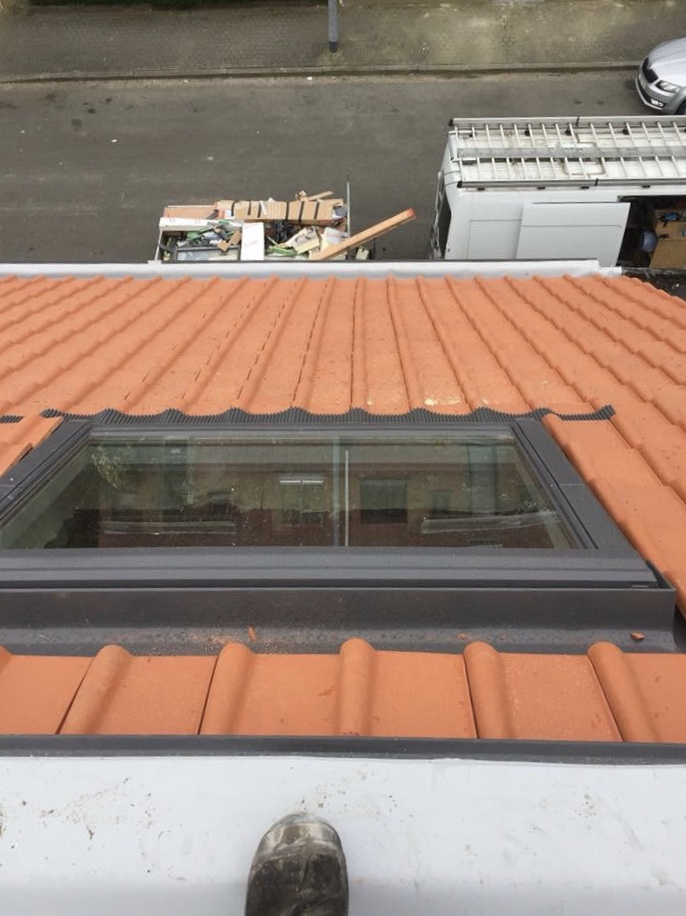
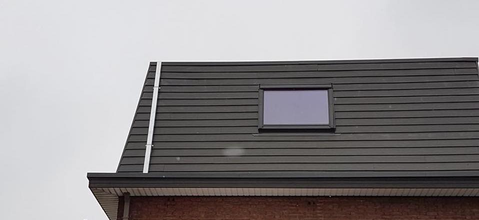
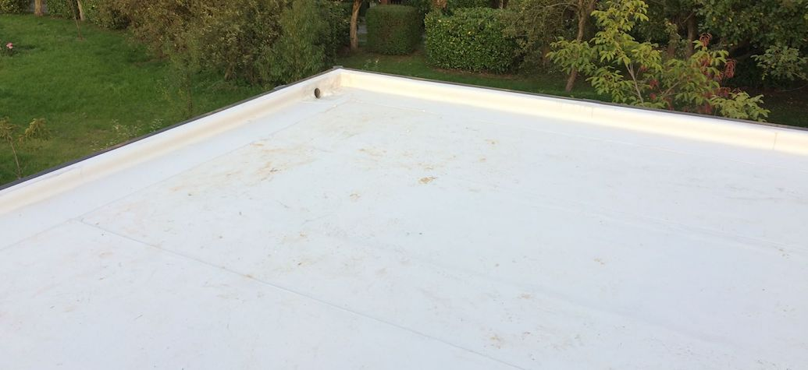

Platte daken
Pvc-dakdichtingWe leggen kunststof dakbanen op platte daken, voor woningen en voor bedrijven. Kleine schade aan een plat dak kan grote gevolgen hebben, dus wacht niet te lang met herstellen of renoveren.

Dakwerken op maat, bij renovatie en nieuwbouw. Van het timmerwerk tot de dakdichting, in Haacht, Keerbergen, Tremelo, Kampenhout en verder.



Alle foto's hieronder zijn van onze eigen werven.
We leggen kunststof dakbanen op platte daken, voor woningen en voor bedrijven. Kleine schade aan een plat dak kan grote gevolgen hebben, dus wacht niet te lang met herstellen of renoveren.

Nieuwe dakbedekking op een nieuw dak, of de oude vervangen. Asbestleien eraf en nieuwe pannen erop: dat deden we al in Boortmeerbeek en Haacht.

Een dak is verantwoordelijk voor een groot deel van het warmteverlies van een woning. We komen kijken hoe je dak er nu voor staat en zeggen wat beter kan.

Meer daglicht onder het dak. Wentelramen, uitzetbare ramen of elektrisch bediend met één druk op de knop.

Sidings op de gevel, zinken hanggoten in plaats van oude bakgoten. Zo is het dak ook rondom mooi afgewerkt.

Klik op een project voor alle foto's. Misschien woon je er wel om de hoek.
Bellen, mailen of het formulier. Een foto van je dak mag er gerust bij.
We bekijken het dak ter plaatse en geven advies op maat.
Gratis en vrijblijvend, met duidelijk welke werken en welke materialen.
Op de afgesproken dag, tot en met de afwerking.
Vanuit Boortmeerbeek. Woon je net iets verder? Vraag het gerust.
Ook al aan de slag geweest in de regio Aarschot.
Ja, gratis en vrijblijvend. We komen eerst langs om het project te bespreken, zodat je een prijs krijgt die klopt.
We werken met kunststof dakbanen, zoals de pvc-dakdichting van Renolit Alkorplan. Die gebruiken we voor woningen en voor bedrijven.
Ja, dat hebben we al meermaals gedaan, onder meer in Boortmeerbeek en in de regio Haacht. De leien maken plaats voor nieuwe pannen.
Ijspegels aan de dakrand, sneeuw die snel smelt, vochtplekken of schimmel op zolder zijn tekens dat het beter kan. We komen graag kijken.
Ja. Bij een aanbouw of overkapping zorgen we voor alles, van het timmerwerk tot de dakdichting.

06OfferteVertel kort waarover het gaat. We nemen contact op en spreken af om langs te komen.
Je aanvraag is binnen. We bellen of mailen je om een moment af te spreken.
Ik maakte deze demo voor jullie om te tonen wat er kan. Na een kort gesprek maak ik er iets veel persoonlijkers van, helemaal naar jullie wens.
Vrijblijvend. Ik kom langs of we bellen.
Op maat, op jullie eigen domein.
Geen voorschot. Jullie betalen pas als alles klaar is.
Hosting, domeinnaam en kleine wijzigingen, zoals nieuwe openingsuren.
Omdat een voorbeeld meer zegt dan een mail. Zo zien jullie meteen wat er kan, en het kost jullie niets.
Nee. Het gesprek is vrijblijvend. Vinden jullie het niks, dan is het daarmee gedaan.
Na ons gesprek staat jullie site binnen 10 tot 14 dagen online.
Zeker. Jullie domeinnaam kan gewoon blijven, de nieuwe site komt in de plaats van de oude.
Nee, dat doe ik op basis van ons gesprek. Eigen foto's zijn mooi meegenomen, maar niet nodig om te starten.